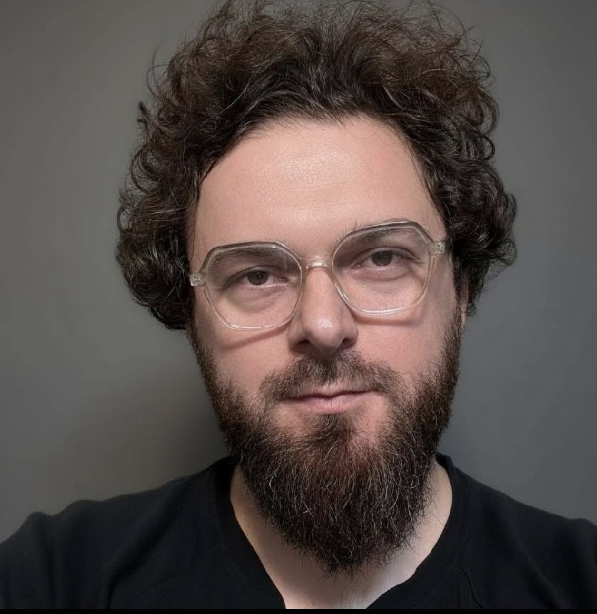
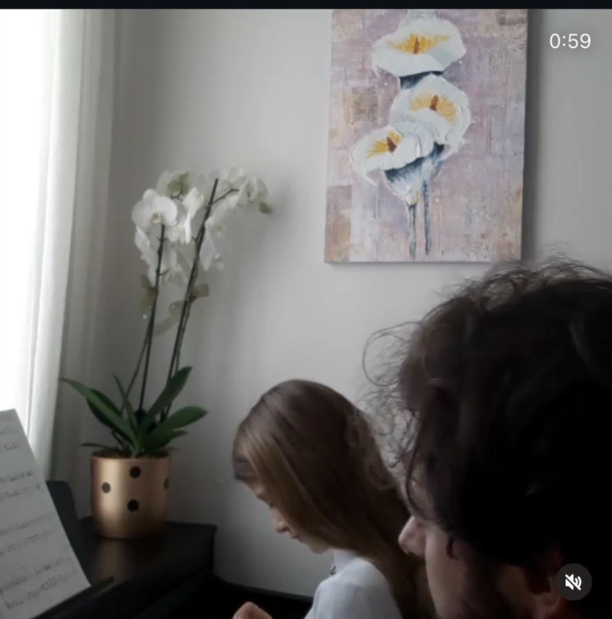
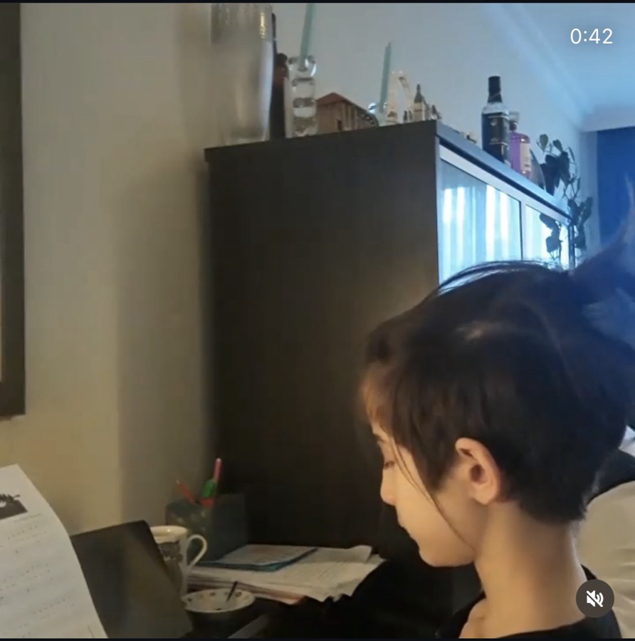
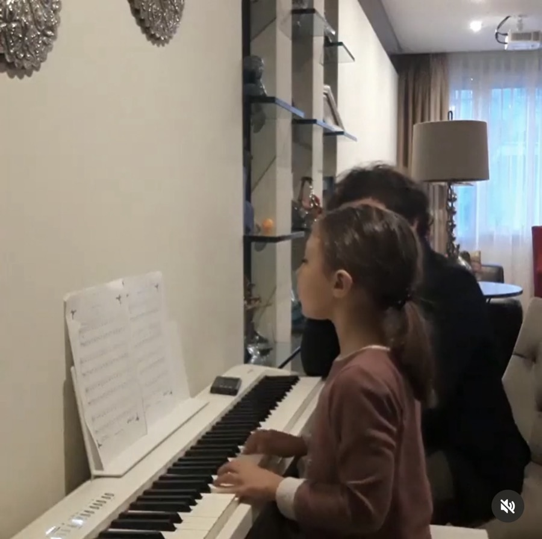
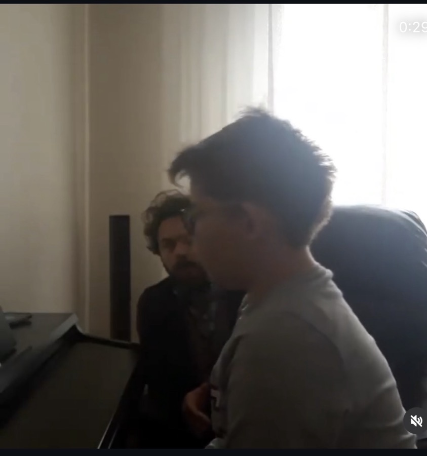
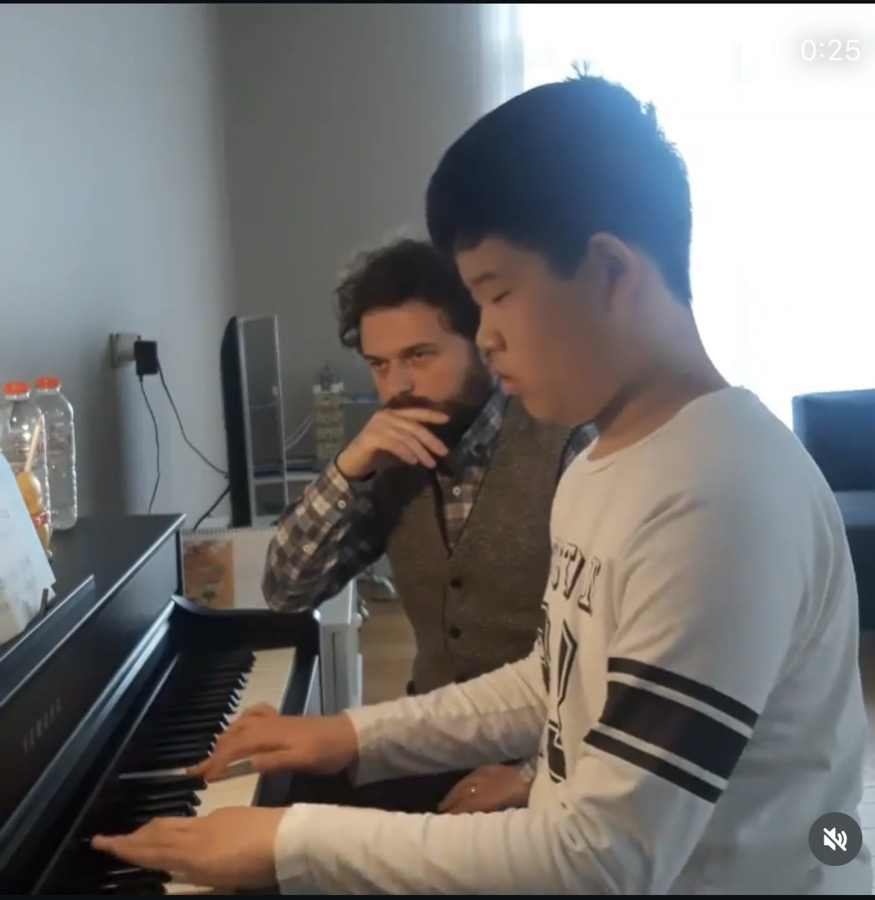

Müzik Eğitimci
İstanbul doğumlu müzik eğitimci ve besteci. 15+ yıl müzik eğitimi deneyimi; konservatuvar, üniversite, çocuk akademisi ve online öğretim alanlarında. Müzik teorisi, armoni, kompozisyon, piyano, solfej ve çağdaş müzik teknolojisi alanlarında kapsamlı öğretim deneyimi.
Konservatuvar lise kademesinde yaklaşık 400 öğrenciyle çalışıldı.
5–18 yaş grubuna yönelik üretim temelli müzik eğitimi müfredatı. Yaklaşık 400 kayıt, 220 öğrenci eğitim aldı.
13 yıl aktif özel öğretim, 8 yıl online öğretim. 6 yaş ve üzeri her yaş grubuna bireyselleştirilmiş müfredat.
Konservatuvara hazırlıkta toplam 57 öğrenci yetiştirdim; 35'i konservatuvarın lise ve ortaokul seviyelerine, 12'si lisans düzeyine kazandırıldı. Farklı bölümlere yönelik öğrenciler hazırladım ve bunu konservatuvar müfredatı ile konservatuvar çalıştırma mantığıyla yaptım. İstanbul Devlet Konservatuvarı'ndaki görevim sayesinde repertuvarlara ve çalıştırma biçimlerine tamamen hâkim olduğum için öğrencilerimi yüksek bir başarı oranıyla hazırladım.
Öğrencilerimle şu ana kadar 8 konser gerçekleştirdik. Her sene en az bir veya iki konser yapıldı; bazen bir mekân kiralandı, bazen ise basitçe ev konserleri düzenlendi. Çocuklar sürekli olarak konserlere ve sahneye çıkmaya teşvik edildi.
Fotoğraflar, öğrenci ve veli izniyle paylaşılmıştır.





6 yıldır müzik teknolojisi dersleri veriyorum. Ağırlıklı olarak Ableton Live ve diğer Digital Audio Workstation (DAW) programlarıyla üretim, kayıt, miksaj ve ses tasarımı dersleri yaptım. Dersler çoğunlukla yetişkinlere ve gençlere yönelik; öğrenci yaş grubum genel olarak 14 ile 65 arasında değişiyor. Her stilde ayrı ayrı çalışmalar yaptırıldı ve her stil için farklı bir çalışma yöntemi belirlendi. Şu ana kadar 18 öğrenciye müzik teknolojisi dersleri verdim.
Marilyn Shrude, Christopher Dietz, Elainie Lillios ve Piyawat Louilarpprasert ile kompozisyon çalışmaları.
Prof. Dr. Emel Çelebioğlu ve Prof. Mete Sakpınar ile kompozisyon ve müzik teorisi eğitimi.
Enstrümantal, vokal, elektroakustik ve multimedia eserler.